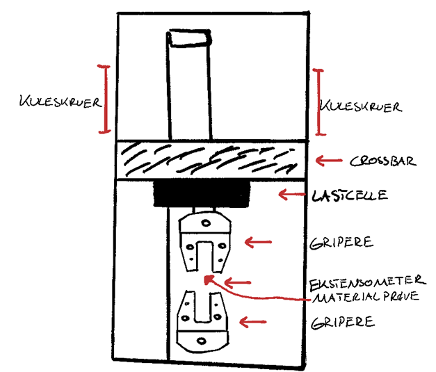
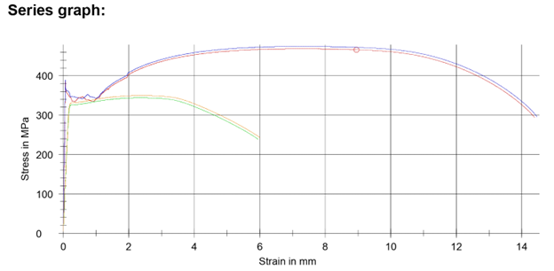
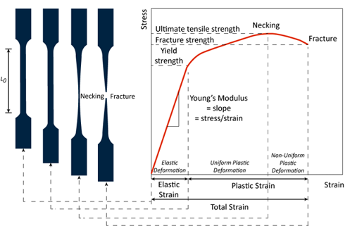
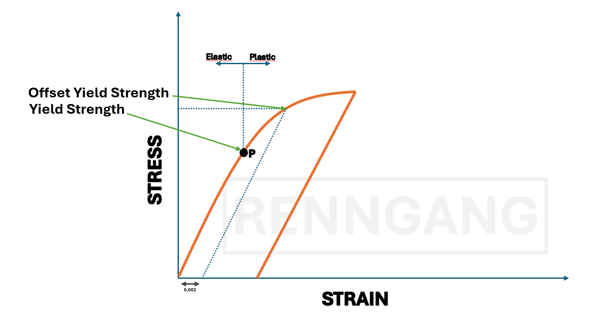
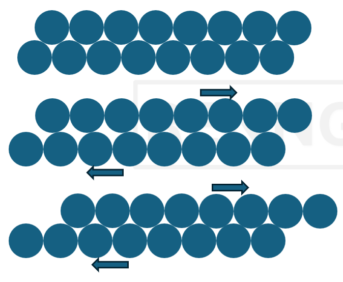

Materials Engineering
Materials Testing
When I say the mechanical properties of a material, what comes to mind?
What kind of properties might those be?
How much stress a material can withstand — that tells us something about its strength. So, things like yield strength or tensile strength are mechanical properties of a material.
Ductility, how tough or flexible a material is, or how much deformation it can handle — these are also mechanical properties.
Material Properties
Mechanical Properties – Describe how a material responds to external forces, including strength, ductility, hardness, toughness, and elasticity.
Technological Properties – Indicate how well a material can be processed or manufactured, such as its suitability for casting, forging, welding, machining, or forming.
Physical Properties – Include thermal and electrical conductivity, density, melting point, and thermal expansion, which influence how a material behaves under various physical conditions.
Chemical Properties – Relate to a material’s resistance to chemical degradation, such as corrosion resistance, oxidation resistance, and behavior at elevated temperatures.
Testing of Material Properties
There are standardized methods for testing material properties, including aspects such as:
Test procedures
Dimensions of test specimens
Sampling locations on the material
In addition to standardized testing, it is also possible to perform tests on scaled models or full-scale components.
It is important to note that the results from a test apply only to the specific specimen tested.
Different conditions may yield different results — this must always be taken into account when evaluating material performance.
Testing Methods
Testing Methods include Destructive Testing and Non-Destructive Testing (NDT)
Destructive Testing:
Tensile Testing
Compression Testing
Fatigue Testing
Creep Testing
Impact (Charpy) Testing
Non-Destructive Testing (NDT):
Hardness Testing
X-ray / CT Scanning
Ultrasound Inspection
Crack Detection
Metallographic Examination
Tensile Testing
The most common strength test for metallic materials is tensile testing.
A test specimen with standardized dimensions is stretched until fracture.
The method and specimen design are specified in standards such as Norwegian Standard or ISO.
Measured properties include, engineering strain (nominal strain), yield strength, ultimate tensile strength (UTS), fracture elongation, elastic modulus, etc.
Measured Properties in Tensile Testing : Strenght, Stiffness and Ductility.

Testing in a Servohydraulic Universal Testing Machine
In experimental materials testing, various specimen types—often flat or cylindrical—are used to examine mechanical properties.
To ensure stable mounting in the tensile testing machine, specimens are clamped in grips that are adapted to the geometry of the test sample.
The upper grip is connected to a load cell, which records the force applied to the test specimen during tensile or compression testing. The load cell is mounted on a crossbar, which moves vertically via ball screws located on the left and right sides of the machine.
The machine is operated via a control panel on the right-hand side.
For safety reasons, the protective door must remain closed during operation.
An extensometer is placed between the upper and lower grips to measure the strain in the specimen during loading.

Before mounting the specimen, its dimensions must be recorded accurately, and the specimen must be inserted at least ¾ into the grip to prevent damage to the equipment.
All test parameters are managed using a specialized analysis program.
The materials tested with the result on the picture is from an old test that consisted of standardized steel and aluminum specimens.
Test Procedure
The specimen gets mounted in the tensile testing machine.
We then attached the macro-extensometer, the device that measures the actual elongation of the specimen during loading. It consists of two sets of arms that move apart as the specimen stretches, allowing it to record the change in length.
Next, we input test parameters, including details about the specimen and the specific test being performed.
Initially, we observed the upper yield point, followed by a drop to the lower yield point.
After this, increasing force was required to continue the slip in new atomic planes.

Another example
Tensile Test where
the curve is linear at the start.
Follows Hooke’s Law: Stress ∝ Strain.
The material will return to its original shape when the load is removed.
At the Yield Point the curve begins to bend.
Then the material becomes stronger and resists further deformation.
Stress increases with strain again after yielding.
The peak of the curve represents the maximum stress the material can endure.
After UTS, the material starts to neck (area reduces locally)and stress drops until the fracture point is reached.
Yield Strenght and Plastic Deformation
The yield strength is the point at which a material can no longer return to its original shape—this is where plastic deformation begins.
In materials that don’t show a sharp yield point (like aluminum), we define yield strength at the point where the material has undergone a permanent strain of 0.002 (or 0.2%).
This is called the 0.2% offset yield strength.
In practice, a computer is connected to the tensile testing machine, collecting data in real time. The stress-strain data is continuously recorded and displayed in the software, allowing for precise determination of yield strength and other mechanical properties.

What Happens Inside a Material During Plastic Deformation?
When a rod undergoes a tensile test, it experiences plastic deformation. But what actually happens inside the material during this process?
Let’s break it down:

A metallic material is made up of many small grains (crystallites), each randomly oriented.
Within each grain, the crystal structure is aligned in a specific direction.
The atomic planes within these grains are not always aligned at a 90° angle to the rod’s axis.
Plastic deformation typically starts when slip (dislocation movement) begins within these crystal planes.
The most densely packed planes are the ones where slip most easily occurs—this is where plastic deformation usually initiates.
Slip of Atomic Planes
Slip occurs most easily in planes with high atomic density (i.e., low critical shear stress). In the figure, it is easier for slip to occur along plane A than along plane B.
The face-centered cubic (FCC) structure has the highest number of closely packed atomic planes and directions (known as slip systems).
Therefore, metals with FCC structures exhibit high plastic deformability (ductility), such as aluminum and copper.
In contrast, the hexagonal close-packed (HCP) structure has only one closely packed atomic plane.
This means less ductility compared to metals with FCC structure.
The Role of Dislocations
When shear stresses are applied, atomic planes slide more easily in regions where dislocations are present.
The dislocation moves to the right until it reaches the edge of the crystal (i.e., the grain boundary).
The resulting shift in the lattice corresponds to the Burgers vector, which—in simple cubic lattices—is equal to the atomic spacing.
The movement of dislocations can be compared to a caterpillar crawling forward, where the distortion moves through the structure, but the whole material doesn’t shift all at once.
"The practical strength of a material is often much lower than the theoretical strength, because theoretical strength calculations are based on the assumption that the material has a perfectly flawless crystal structure."
Tensile Testing of Mild Steel – What Happens Inside the Test Specimen?
At the proportional limit P, the first atomic plane slips begin.
At the upper yield point, dislocations are "released." The glide process can now continue at a lower stress level (the lower yield point).
Slip bands gradually become visible on the surface of the specimen. Extensive atomic plane slipping occurs, resulting in a significant elongation of the specimen (typically 4–5% for mild steel).


Deformation Process in the Test Specimen
Dislocations begin to accumulate over time.
The material starts to harden, and the stress curve begins to rise again.
This hardening gradually diminishes as the material approaches the maximum point on the stress-strain curve.
Once this maximum is passed, necking begins – the cross-sectional area decreases more rapidly than the material can harden, causing the curve to drop.
The remaining deformation now occurs locally in the necked region until all dislocation motion is again locked. This process ultimately ends in fracture.
Deformation Process in the Test Specimen – Final Fracture
The fracture initiates at the center of the specimen, where micro-voids form in the interior regions.
In the outer areas, atomic plane slip occurs along planes oriented at 45° to the loading direction.
The fracture surface typically takes the shape of a crater, with a flat bottom and walls sloping at 45°—commonly referred to as a cup-and-cone fracture.
Compression Testing
Primarily used for hard and brittle materials such as concrete, glass, cast iron, and wood. Can also be used for ductile materials.
Measured Properties are yield strength and compressive strength.
Measurement Uncertainty and Safety Factor
Measurements from material testing are not exact values, that is important to remember.
Results such as elastic modulus, yield strength, etc., may vary from test to test and this variation can be caused by several factors, for example:
Small variations in test specimens
Calibration differences in testing machines
Environmental conditions or operator handling
Therefore, results are typically based on:
The average (mean) of multiple tests
The standard deviation, which describes the spread or variation in the results
Due to this uncertainty, engineers apply a safety factor to design calculations.
This ensures that the material or structure performs reliably under real-world conditions
The safety factor accounts for possible variation, unknowns, and unexpected loads
Hardness
Hardness is a measure of a material’s resistance to localized plastic deformation, such as dents, scratches, or indentations.
There are many qualitative test methods, resulting in multiple hardness scales.
The most common hardness tests for metals include:
Brinell
Vickers
Rockwell
Relative Property:
– Caution is needed when comparing hardness values obtained using different test methods.
Hardness Testing – Why It’s Widely Used
One of the most frequently performed material tests
Low cost
Non-destructive – Can be performed directly on finished parts
Other mechanical properties (e.g., tensile strength) can be estimated from hardness values
Brinell Hardness Test
Method:
A hardened steel ball with a standardized diameter (D = 10.00 mm) is pressed into the test surface using a standard load (typically 500–3000 kg).
The diameter (d) of the indentation is measured.
The Brinell hardness number (HB) is then calculated based on the load and the size of the indentation.
Hardness Testing: Vickers Test
Method:
A diamond pyramid with an included angle of 136° is pressed into the surface of the test specimen using a standard load (F).
The length of the diagonals of the resulting indentation is measured.
The Vickers hardness number (HV) is then calculated based on the applied load and the size of the indentation.
Key Advantages:
Produces very small indentations
Well-suited for testing on small components or thin sections
Hardness Testing: Rockwell Test
Method:
The depth of penetration is measured using either:
– A steel ball (Rockwell B scale), or
– A cone-shaped diamond tip (Rockwell C scale)
Various indenter sizes and loads are used depending on the scale and material.
– A standard preliminary (minor) load of 10 kg is first applied.
– This is followed by a major load (typically 60, 100, or 150 kg), depending on the scale.
– For thin materials, lower loads may be used.
The Rockwell hardness number (HR) is calculated based on the difference in indentation depth before and after removing the preliminary load.
Fatigue (Material Fatigue)
Fatigue is the most common cause of failure in machine components such as gears and other rotating parts.
Cracks and fractures can occur in a material subjected to cyclic loading over time, even when the stress levels are below the yield strength.
Components exposed to thermal stresses are also highly susceptible to fatigue failure.
Fatigue fractures usually initiate from small cracks or surface imperfections, which gradually propagate through the material.
Factors That Affect Fatigue Strength:
Stress concentrations (e.g., notches, sharp corners)
Stress level and variation
Surface condition (e.g., roughness, scratches)
Operating temperature
Corrosive environment
Type of loading (axial, bending, torsion, etc.)
Fatigue Testing
Principle:
Fatigue testing involves measuring how many load cycles a material sample can withstand under various stress magnitudes and types.
The result is used to determine the fatigue strength of the material.
Types of stress variations applied during fatigue testing:
Symmetric alternating loading:
Equal tensile and compressive stresses are applied (see fig. a)
Fluctuating loading:
Only tensile or only compressive stress, where one stress limit is zero (see fig. b, d)
Pulsating loading:
Repeated tensile stress (fig. c) or repeated compressive stress (fig. e)
Impact Testing (Notch Toughness Testing)
Materials with a BCC (body-centered cubic) structure (e.g., iron) are particularly susceptible to brittle fracture (cleavage fracture) at low temperatures.
Impact testing evaluates a material's ability to resist brittle fracture under various temperature conditions.
The test investigates the effects of:
Low temperatures
Triaxial stress states
High loading rates
The most commonly used test methods are:
Charpy V-notch test
Izod test
Impact Testing – Izod / Charpy V-Notch Test
A notch is made in the test specimen, which is then placed against an anvil.
A pendulum hammer is released from a specified height (h).
The specimen is fractured as the hammer swings through the lowest point of its arc.
The impact energy (energy absorbed during fracture) is defined as the difference in potential energy between the initial height h and the height h′ after the swing.
Impact Toughness
Defined as the difference in the pendulum's kinetic energy before and after the impact.
Describes the material’s ability to resist brittle fracture under a given temperature and in the presence of a notch (stress concentrator).
Creep
A thermally activated deformation mechanism
Plastic deformation that occurs when a material is subjected to a sustained load (below the yield strength) at elevated temperatures
Becomes significant when the temperature reaches about 30–40% of the material’s melting temperature (in Kelvin)
Highly relevant for high-temperature applications, such as: – Engines
– Boilers
– Gas and steam turbines
Amorphous materials (e.g., plastics) and low-melting-point metals (e.g., lead, tin) may experience creep even at room temperature
Pure metals are generally more susceptible to creep than alloys
Creep Testing
The procedure is similar to a tensile test, but performed at elevated temperatures (e.g., inside a furnace)
Measures strain over time under a constant load until fracture occurs
Creep Testing – 3 Stages
Primary Creep (Decreasing Creep Rate):
Initial deformation followed by strain hardening
Short duration
Secondary Creep (Steady-State Creep):
Constant and minimal creep rate
A balance between strain hardening and recovery
Very long duration
Tertiary Creep (Increasing Creep Rate):
Increasing internal stress, necking, and eventual fracture
Key Parameters Measured:
Creep strength:
The stress (at a given temperature) that results in a constant creep rate of
10⁻³ or 10⁻⁴ % per hour
Creep rupture strength:
The nominal stress that causes fracture (at a given temperature) after a specified test time, typically 100 or 1000 hours
Typical Materials with High Creep Resistance:
Generally: Metals with face-centered cubic (FCC) crystal structures
Alloys whose base metals have high melting points
Examples:
Aluminum alloys
Titanium alloys
High-temperature steels
Nickel- and cobalt-based superalloys
Tungsten
Molybdenum
Non-Destructive Testing (NDT)
Allows material testing without damaging the specimen
The test piece remains unchanged
Can be applied directly to finished components
X-ray Inspection
Provides an image of external contours and internal voids
Particularly useful for inspecting weld joints
– Can reveal root defects, slag inclusions, and porosity
Limitation:
– X-ray imaging does not indicate to what extent the material properties are affected by these defects
Ultrasonic Testing
Ultrasound consists of pressure waves with frequencies typically between 18,000–20,000 Hz and above (i.e., ultrasonic range)
In materials testing, an impulse–echo system is commonly used: – Vibrations are applied to the test specimen using a piezoelectric material, which generates electrical signals under elastic deformation
– These elastic waves propagate through the material
Used to detect internal defects, such as:
– Cracks
– Gas bubbles
– Corrosion
– Inclusions
Magnetic Particle Inspection
Cracks or defects in a material have different magnetic permeability compared to the surrounding material
These irregularities can be detected by applying a magnetic field through the component (typically using an electromagnet)
The defect becomes visible when magnetic powder is applied, which accumulates at the discontinuity
This is a commonly used method for detecting surface or near-surface defects such as cracks in tools, engine components, and similar parts
Limitation:
– This method is only applicable to ferromagnetic materials, such as steel and cast iron
Crack Detection Using Penetrant Liquid (Dye Penetrant Testing / Capillary Testing)
Used to detect surface cracks on materials such as metal plates
Example of method:
The surface is coated with a penetrant (e.g., oil or dye) that seeps into surface cracks via capillary action
The surface is cleaned, removing excess penetrant
A developer (e.g., chalk suspension) is applied to the surface
As the developer dries, the penetrant in the cracks is drawn back out into the developer, making the cracks visible
Requirements:
– The surface must be relatively smooth and clean for accurate detection